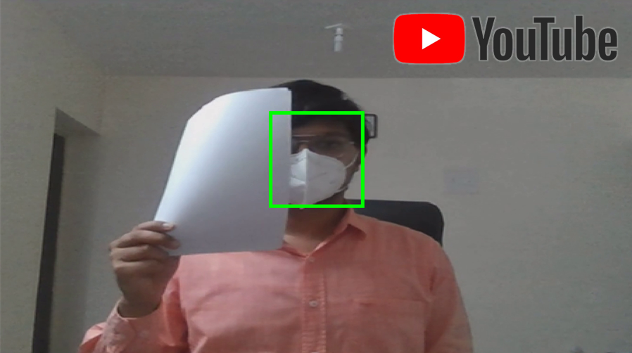
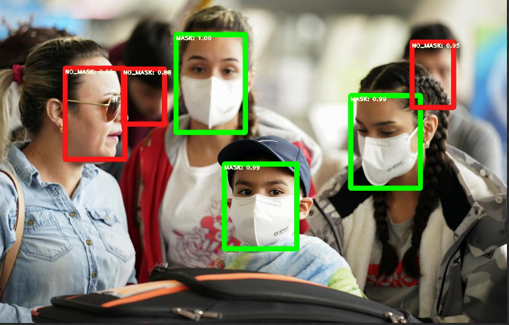
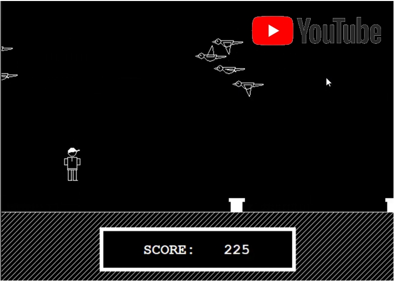

YouTube Video
Input
Output
> In the project the input to our model will be an image or a video (Mostly Real-Time) and the output will be a bounding box corresponding to person face in the image/video along with telling that that person has to wear a face mask or not.
> Self-modified YOLO
V3 Architecture is used, which includes
1. Localization
2. Class
Prediction
3. Thresholding
4. Non-max
suppression irrespective of class label
5. Bounding
Box Labelling.
> For implementation Pytorch framework is used with OpenCV, NumPy, and other libraries.
> Raw Data is Self Made and downloaded from Youtube Videos and Baidu & Wider-face Dataset. For the Training data, labeling is done with LabelImg & DarkLabel tools.
> Ckick GitRepo for more details
YouTube Video
> Created a game in C++ which replicates most of the functionalities of Google No Internet game: T-Rex Run and Mario game.
> This game has a sound-enabled multithreaded environment.
> <graphics.h> header file is used for making User Interface.
> Ckick GitRepo for more details